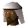

Al Shabim.

| Config name | al_shabim |
| NPC id | 832 |
| Combat level | hidden |
| Options | Talk-to |
| Wander range | 3 tiles from spawn |
| Area folder | area_desert |
| Defined in | scripts/areas/area_desert/configs/bedabincamp.npc |
Al Shabim.
He's the leader of the Bedabin tribe.
Show all 1 spawn on the world map → Open in knowledge graph →
Locations
| Area | Coordinates | Level | Count | Map |
|---|---|---|---|---|
| Bedabin Camp | 3171, 3025 | 0 | 1 | view |
Dialogue
Al Shabim.Hello Effendi!
Al Shabim.Many thanks with your help previously Effendi!
PlayerI am looking for a pineapple.
Al Shabim.Here is another pineapple, try not to lose this one.
Al Shabim.Oh yes, well that is interesting. Our sweet pineapples are renowned throughout the whole of Kharid ! And I'll give you one if you do me a favour?
PlayerOh yes?
Al Shabim.Captain Siad at the mining camp is holding some secret information. It is very important to us and we would like you to get it for us. It gives details of an interesting, yet ancient weapon.
Al Shabim.We would gladly share this information with you. All you have to do is gain access to his private room upstairs. We have a key for the chest that contains this information. Are you interested in our deal?
PlayerYes, I'm interested.
Al Shabim.That's great Effendi!
Al Shabim.Here is a copy of the key that should give you access to the chest.
Al Shabim.Bring us back the plans inside the chest, they should be sealed. All haste to you Effendi!
PlayerNot at the moment.
Al Shabim.Very well Effendi!
PlayerWhat is this place?
Al Shabim.This is the home of the Bedabin. We're a peaceful tribe of desert dwellers. Some idiots call us 'Tenti's', a childish name borne of ignorance.
Al Shabim.We're renowned for surviving in the harshest desert climate. We also grow the 'Bedabin ambrosia.'... A pineapple of such delicious sumptiousness that it defies description.
Al Shabim.Take a look around our camp if you like!
PlayerOkay Thanks!
Al Shabim.Good day Effendi!
PlayerWhat is there to do around here?
Al Shabim.Well, we are all very busy most of the time, tending to the pineapples. They are grown in a secret location, to stop thieves from raiding our most precious prize.
PlayerGoodbye!
Al Shabim.Very well, good day Effendi!
Al Shabim.Wonderful, I see you have made the new weapon!
Al Shabim.Where did you get this from Effendi! I'll have to confiscate this for your own safety!
Al Shabim.This is truly fantastic Effendi!
Al Shabim.We will take the technical plans for the weapon as well.
Al Shabim.We are forever grateful for this gift. My advisors have discovered some secrets which we will share with you.
Al Shabim's advisors show you some advanced techniques for making the new weapon.
Al Shabim.Please accept this selection of six bronze throwing darts as a token of our appreciation.
Al Shabim.I'll take that key off your hands as well effendi! Many thanks!
Al Shabim.Oh, and here is your pineapple!
Al Shabim takes the technical plans off you.
Al Shabim.Thanks for the technical plans Effendi! We've been lost without them!
Al Shabim.Aha! I see you have the plans. This is great! However, these plans do indeed look very technical. My people have further need of your skills.
Al Shabim.If you can help us to manufacture this item, we will share its secret with you. Does this deal interest you effendi?
PlayerYes, I'm very interested.
Al Shabim.Aha! I see you have the items we need! Are you still willing to help make the weapon?
PlayerYes, I'm kind of curious.
Al Shabim.Okay Effendi, you need to follow the plans. You will need some special tools for this... There is an anvil in the other tent. You have my permission to use it, but show the plans to the guard.
Al Shabim.You have the plans and all the items needed. You should be able to complete the item on your own. Please bring me the item when it is finished.
PlayerNo, sorry.
Al Shabim.As you wish Effendi!
Al Shabim.Come back if you change your mind!
Al Shabim.Great, we need the following items: a bar of pure bronze, 10 feathers and a hammer. Bring them to me and we'll continue to make the item.
Al Shabim.How are things going Effendi?
PlayerI've lost the key!
Al Shabim.How very careless of you! Here is another key, don't lose it this time !
PlayerI've lost the plans and the dart tips!
PlayerI've lost the key and the plans!
Al Shabim.How very careless of you!
Al Shabim thinks for a moment.
Al Shabim.The Captain may have some new plans drawn up. Go back and see if you can collect them.
Al Shabim.Here is the key you'll need for the chest!
Al Shabim.I am Al Shabim, greetings on behalf of the Bedabin nomads.
PlayerWho are you?
Al Shabim.I am Al Shabim Effendi! I am the leader of the Bedabin peoples!
PlayerI am looking for Al Zaba Bhasim.
Al Shabim.I've already explained that he doesn't exist. Now, can we move on?
Al Shabim.Huh! You have been talking to the guards at the mining camp. Or worse, that cowardly mercenary captain. Al Zaba Bhasim does not exist, he is a figment of their imagination!
Al Shabim.Go back and tell this captain that if he wants to find this man he should search for him personally. See how much of his own time he would like to waste.
Quests
Referenced in scripts
scripts/quests/quest_desertrescue/scripts/al_shabim.rs2